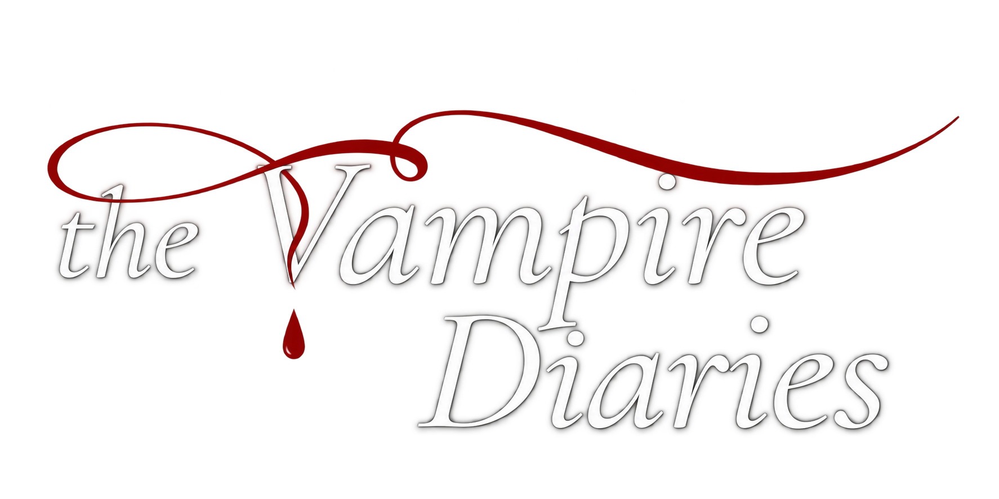

Temporada 1
Elena Gilbert descubre un secreto oscuro en Mystic Falls cuando se enamora de Stefan Salvatore y se enfrenta al misterio de los vampiros que habitan la ciudad.

Elena Gilbert descubre un secreto oscuro en Mystic Falls cuando se enamora de Stefan Salvatore y se enfrenta al misterio de los vampiros que habitan la ciudad.

Aparece el peligroso Klaus y la historia se complica con traiciones, nuevos enemigos y la lucha por proteger a los seres queridos frente a un fin inminente.

Elena y sus amigos enfrentan los efectos del sacrificio, al tiempo que las decisiones del pasado regresan para cambiar el futuro de Mystic Falls y sus relaciones.

La llegada de los Originales altera todo el equilibrio del pueblo, mientras Elena busca respuestas sobre su destino y las consecuencias del amor verdadero.

Elena despierta en una dimensión cercana a la muerte y debe volver a la realidad mientras sus seres queridos viven el dolor de su ausencia y la amenaza del misterio.

En un nuevo comienzo, los protagonistas intentan seguir adelante mientras un antiguo enemigo reaparece y los secretos del pueblo vuelven a abrir heridas del pasado.

El conflicto entre vampiros, brujas y una nueva amenaza se intensifica, y cada elección de los personajes tendrá un costo muy alto para la comunidad.

La última temporada reúne a los personajes en una batalla final por la supervivencia, el amor y la verdad, cerrando un capítulo épico de Mystic Falls.